철도신호기사 (2005-05-29 기출문제)
1과목: 전자공학
1. 아날로그 변조방식에 속하지 않는 것은?
- 펄스폭 변조(PWM)
- 펄스 위상변조(PPM)
- 펄스밀도 변조(PNM)
- 펄스 주파수변조(PFM)
(정답률: 알수없음)

2. 다음 설명 중 틀린 것은?
- 가전자가 하나 부족한 것을 도너라 한다.
- 도너준위는 전도대보다 약 0.01eV 만큼 낮은 레벨이다.
- 순수 반도체속에 불순물을 첨가하여 Si과 Ge의 저항을 변화시키는 과정이 도핑이다.
- 억셉터 원자는 + 이온이다.
(정답률: 알수없음)
3. 다음의 부울대수식 중 틀린 것은?
- x + yz = (x + y)(x + z)
- x(x + y) = x
- x + xy = x
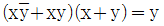
(정답률: 알수없음)
4. 그림과 같은 논리회로와 등가적으로 동작하는 스위치는?
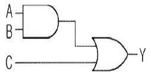
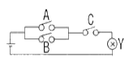
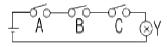
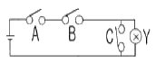
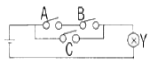
(정답률: 알수없음)
5. 발진기를 증폭기와 비교하였을 때 가장 큰 차이점은?
- 입력신호가 불필요하다.
- 이득이 크다.
- 항상 출력이 같다.
- DC 공급전압이 불필요하다.
(정답률: 알수없음)
6. 그림과 같은 회로는 무슨 회로라 하는가?
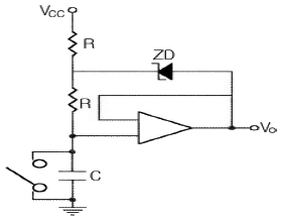
- 부트스트랩 스위프 발생기
- 제한기
- 로그증폭기
- 클램핑회로
(정답률: 알수없음)
7. 아날로그 계산기를 연산 증폭기를 이용하여 구성할 때 보통 미분기 대신에 적분기를 사용한다. 그 이유는?
- 적분기의 회로가 간단하다.
- 적분기는 잡음특성이 좋다.
- 적분기의 계산 속도가 빠르다.
- 적분기는 비선형이다.
(정답률: 알수없음)
8. 1MHz로 동작하는 100 μH, 10Ω이 연결된 회로에서 양호도 Q 는 얼마인가?
- 50
- 62.8
- 72.2
- 80
(정답률: 알수없음)
9. 전자빔의 형광작용을 이용하지 않는 것은?
- 금속 가공기
- 파형을 보는 계측장비
- 의료장비
- 오실로스코프
(정답률: 알수없음)
10. 고체의 에너지 대에 대한 설명으로 옳지 않은 것은?
- 전자가 존재할 수 없는 에너지 대를 금지대라 한다.
- 전자가 어떤 에너지를 받으면 들어갈 수 있지만 보통의 상태에서는 전자가 존재하지 않는 허용대를 공핍대라 한다.
- 전자가 들어 갈 수 있는 허용대이지만 전자가 모두 채워져서 전자가 이동할 여지가 없는 허용대를 충만대라 한다.
- 전도대란 언제나 전자로 가득 채워져 있다.
(정답률: 알수없음)
11. 그림에서 저항의 양끝 전위차를 구하면 몇 V 인가? (단, 제너전압 VZD를 5V, 전원전압을 12V로 한다.)
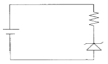
- 5
- 7
- 12
- 15
(정답률: 알수없음)
12. JFET는 무슨 소자인가?
- 유니폴라 소자, 전압제어 소자
- 전류제어 소자, 저항제어 소자
- 전압제어 소자, 저항제어 소자
- 유니폴라 소자, 전류제어 소자
(정답률: 알수없음)
13. 트랜지스터의 동작상태 중 차단상태에 해당하는 것은?
- EB 접합 : 순바이어스, CB 접합 : 순바이어스
- EB 접합 : 역바이어스, CB 접합 : 순바이어스
- EB 접합 : 순바이어스, CB 접합 : 역바이어스
- EB 접합 : 역바이어스, CB 접합 : 역바이어스
(정답률: 알수없음)
14. 트랜지스터 증폭기에서 Q 동작점의 변동 원인의 영향이 가장 적은 것은?
- 트랜지스터의 품질 불균일
- 동작 주파수
- 컬렉터 차단전류의 온도변화
- 베이스와 이미터간의 바이어스 전압의 온도 변화
(정답률: 알수없음)
15. 13(10)을 그레이 코드로 변환한 것은?
- 1101
- 0010
- 1011
- 1010
(정답률: 알수없음)
16. 그림과 같은 회로의 명칭은 무엇인가?
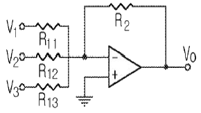
- 가산기
- 미분기
- 적분기
- 반파 정류기
(정답률: 알수없음)
17. 상업용 진폭변조(AM)식으로 옳은 것은? (단, VC 는 변조진폭, m(t)는 데이터신호, ωS는 데이터 주파수, ωC 는 반송주파수이다.)
- φAM = VC m(t) cos(ωSt) cos(ωCt)
- φAM = VC [1 + m(t) cos(ωSt)] cos(ωCt)
- φAM = VC [1 + m(t) cos(ωSt)]
- φAM = VC [1 + m(t) cos(ωCt)] cos(ωSt)
(정답률: 알수없음)
18. 미분기의 출력은 무엇에 비례하는가?
- RC 시정수
- 입력이 변화하는 비율
- 입력의 진폭
- RC 시정수와 입력이 변화하는 비율
(정답률: 알수없음)
19. 그림과 같은 AM 변조파형의 변조도는 약 몇 % 인가?
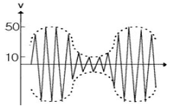
- 46.7
- 52.7
- 66.7
- 73.7
(정답률: 알수없음)
20. 그림과 같은 연산증폭기의 출력전압은?
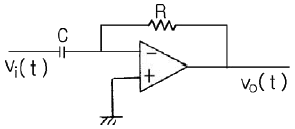
- 출력전압은 입력전압을 미분한 형태로서, 위상이 반전된다.
- 출력전압은 입력전압을 미분한 형태로서, 위상이 같다.
- 출력전압은 입력전압을 적분한 형태로서, 위상이 반전된다.
- 출력전압은 입력전압을 적분한 형태로서, 위상이 같다.
(정답률: 알수없음)
2과목: 회로이론 및 제어공학
21. 그림과 같은 회로에서 t=0에서 스위치 S를 닫으면서 전압 E[V] 를 가할 때 L양단에 걸리는 전압 eL[V] 는?
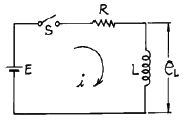
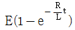
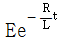
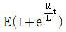
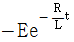
(정답률: 알수없음)
22. e = 3 + 10√2 sin ωt + 4√2 sin(3ωt +
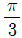
) + 10√2 sin(5ωt -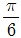
)일때 실효값[V]은?- 11.6[V]
- 15[V]
- 31[V]
- 42.6[V]
(정답률: 알수없음)
23. 어떤 계를 표시하는 미분 방정식이
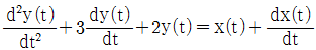
라고 한다. x(t)는 입력, y(t)는 출력이라고 한다면 이 계의 전달함수는 어떻게 표시되는가?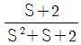
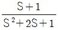
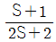
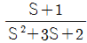
(정답률: 알수없음)
24. 그림에서 10[Ω]의 저항에 흐르는 전류는 몇[A] 인가?
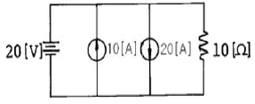
- 2
- 12
- 30
- 32
(정답률: 알수없음)
25. 3상 평형부하에 선간전압 200[V]의 평형 3상 정현파 전압을 인가했을 때 선전류는 8.6[A]가 흐르고 무효전력이 1788[var]이었다. 역률은 얼마인가?
- 0.6
- 0.7
- 0.8
- 0.9
(정답률: 알수없음)
26. f(t) = u(t-a)-u(t-b) 식으로 표시되는 구형파의 라플라스는?
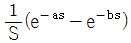
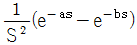
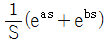
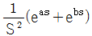
(정답률: 알수없음)
27. 그림과 같은 4단자망 회로의 4단자 정수중 D의 값은? (단, 각 주파수는 ω[rad/s]이다.)
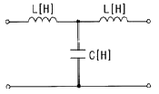
- jωC
- jωL
- jωL(1-ω2LC)
- 1-ω2LC
(정답률: 알수없음)
28. 저항 R[Ω] 3개를 Y로 접속한 회로에 전압 200[V]의 3상 교류전원을 인가시 선전류가 10[A]라면 이 3개의 저항을 △로 접속하고 동일전원을 인가시 선전류는 몇 [A] 인가?
- 10
- 10√3
- 30
- 30√3
(정답률: 알수없음)
29. 다음중 파형율과 파고율에 대한 설명으로 틀린 것은?
- 파형율 = 실효치/평균치
- 파고율 = 최대치/평균치
- 파형율과 파고율은 1에 가까울수록 평탄해진다.
- 구형파가 가장 평탄하다.
(정답률: 알수없음)
30. 단위 길이당 인덕턴스 L[H], 용량 C[μF]의 가공전선의 특성 임피던스[Ω]는 얼마인가?
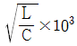
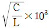
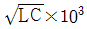
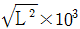
(정답률: 알수없음)
31. 함수 f(t)=t2e-3t 의 라프라스 변환(F(s))은?
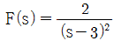
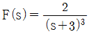
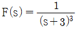
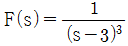
(정답률: 알수없음)
32. 그림과 같은 미분요소에 입력으로 단위계단 함수를 사용하면 출력 파형으로 알맞은 것은?
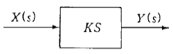
- 임펄스 파형
- 사인파형
- 삼각파형
- 톱니파형
(정답률: 알수없음)
33. 다음 중 위상여유의 정의는 무엇인가?
- 이득교차 주파수에서의 위상각이다.
- 크기는 이득교차 주파수에서의 위상각이고 부호는 반대이다.
- 이득교차 주파수에서의 위상각에서 90°를 더한 것이다.
- 이득교차 주파수에서의 위상각에서 180°를 더한 것이다.
(정답률: 알수없음)
34. 그림과 같은 회로의 출력 Z는 어떻게 표현되는가?
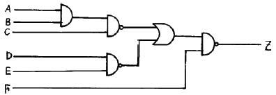
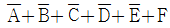
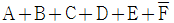
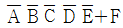
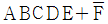
(정답률: 알수없음)
35.
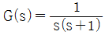
에서 ω=10(rad/sec)일 때 이득[db]은?- 40
- 20
- -20
- -40
(정답률: 알수없음)
36. 주파수 특성에 관한 정수 가운데 첨두 공진점 Mp 값은 대략 어느 정도로 설계하는 것이 가장 좋은가?
- 0.1이하
- 0.1 - 1.0
- 1.1 - 1.5
- 1.5 - 2.0
(정답률: 알수없음)
37. 다음 중 과도 특성을 해치지 않고 보상하는 것은?
- 진상 보상기
- 지상 보상기
- 관측자 보상기
- 직렬 보상기
(정답률: 알수없음)
38. 다음의 과도응답에 관한 설명 중 옳지 않은 것은?
- 지연 시간은 응답이 최초로 목표값의 50%가 되는 데 소요되는 시간이다.
- 백분율 오버슈트는 최종 목표값과 최대 오버슈트와의 비를 %로 나타낸 것이다.
- 감쇠비는 최종 목표값과 최대 오버슈트와의 비를 나타낸 것이다.
- 응답시간은 응답이 요구하는 오차 이내로 정착되는데 걸리는 시간이다.
(정답률: 알수없음)
39. 상태 방정식
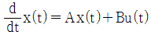
, 출력 방정식 y(t)=Cx(t)에서,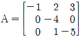
,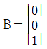
,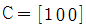
일 때, 아래 설명 중 맞는 것은?- 이 시스템은 가제어하고(controllable), 가관측하다(observable).
- 이 시스템은 가제어하나(controllable), 가관측하지않다(unobservable).
- 이 시스템은 가제어하지 않으나(uncontrollable), 가관측하다(observable).
- 이 시스템은 가제어하지 않고(uncontrollable), 가관측하지 않다(unobservable).
(정답률: 알수없음)
40. PD 제어동작은 프로세스 제어계의 과도 특성 개선에 쓰인다. 이것에 대응하는 보상 요소는?
- 지상 보상 요소
- 진상 보상 요소
- 진지상 보상 요소
- 동상 보상 요소
(정답률: 알수없음)
3과목: 신호기기
41. ATC 지상장치에서 AF 궤도회로 송신 출력전압은 송신카드 전면판 출력전압 단자에서 측정하여 각 궤도회로의 초기 설정치는 몇 db 이내인가?
- ±1
- ±2
- ±3
- ±4
(정답률: 알수없음)
42. 정격 부하 20[A]에서 전부하 전압100[V], 무부하 전압 137[V]일 때 전압변동률[%]은?
- 10
- 17
- 28
- 37
(정답률: 알수없음)
43. 건널목 경보기에서 경보등의 점멸회수는 등당 몇 [회/min] 인가?
- 20 ±5
- 30 ±5
- 40 ±10
- 50 ±10
(정답률: 알수없음)
44. 권선형 유도 전동기의 기동시 2차측에 저항을 넣는 이유는?
- 회전수 감소
- 기동 전류 감소와 토오크 증대
- 기동 토오크 감소
- 기동 전류 감소
(정답률: 알수없음)
45. 입력 100[V]의 단상 교류를 SCR 4개를 사용하여 브리지제어 정류하려 한다. 이때 사용할 1개 SCR의 최대 역전압(내압)은 약 몇[V] 이상 이어야 하나？
- 25
- 100
- 142
- 200
(정답률: 알수없음)
46. 60[Hz], 슬립3[%], 회전수1164[rpm]인 유도 전동기의 극수는?
- 2
- 4
- 6
- 8
(정답률: 알수없음)
47. 진로선별식 계전연동장치의 진로조사 계전기 회로는 다음 중 어느 회로로 구성되나?
- 망상회로
- 직렬회로
- 병렬회로
- 직,병렬회로
(정답률: 알수없음)
48. 공급전압을 일정하게 하였을 때 변압기의 와전류 손은?
- 주파수의 제곱에 비례
- 주파수에 비례
- 주파수에 반비례
- 주파수에 무관계
(정답률: 60%)
49. 전기전철기와 같이 단시간으로 빈번하게 사용하는 직류 전동기로 적당한 전동기는?
- 타여전동기
- 분권전동기
- 복권전동기
- 직권전동기
(정답률: 알수없음)
50. 최근 직류 전기차 제어에 많이 채용되는 방법은?
- 저항제어
- 직병렬제어
- 탭제어
- 초퍼제어
(정답률: 알수없음)
51. 전차용 주전동기에 보극을 설치하는 이유는?
- 역회전방지
- 정류개선
- 섬락방지
- 불꽃방지
(정답률: 알수없음)
52. 다음 중 건널목 경보 장치에 건널목 제어기를 사용하는 이유가 아닌 것은?
- 건널목 제어장이 서로 다를 때
- 건널목이 중첩된 곳
- 전철구간 등 별도 궤도회로 구성이 곤란한 곳
- 신호케이블의 소요가 적으므로
(정답률: 알수없음)
53. 회전자 입력 10[KW], 슬립4[%]인 3상 유도전동기의 2차 동손은 몇[KW] 인가?
- 9.6
- 4
- 1.6
- 0.4
(정답률: 알수없음)
54. 출력 3[㎾], 1500[rpm]으로 회전하는 전동기의 토오크는 몇[㎏·m]인가?
- 25.5
- 27.9
- 1.95
- 1.47
(정답률: 알수없음)
55. 변압기의 병렬 운전시 필요하지 않는 것은?
- 임피이던스 전압이 같을 것
- 극성이 같을 것
- 정격 출력이 같을 것
- 정격 전압과 권수비가 같을 것
(정답률: 알수없음)
56. 궤도회로에서 궤도저항자, 궤도리액터 등의 한류기를 사용하는 목적이 아닌 것은?
- 궤도 릴레이의 전압 조정
- 궤도회로의 단락감도 향상
- 유도장해 경감
- 중계 거리의 연장
(정답률: 알수없음)
57. 정류기용 세렌판의 전류 용량은 몇[ mA/㎝2 ]인가?
- 30
- 50
- 70
- 80
(정답률: 알수없음)
58. 궤도회로의 적용에서 교류 전철 구간에 해당되는 것은?
- AF 궤도회로
- PF 궤도회로
- 임펄스 궤도회로
- 직류 궤도회로
(정답률: 알수없음)
59. 다음 계전기 중에서 가장 널리 사용되는 일반적인 직류계전기로서 보통 복수의(N) 접점과 반위(R) 접점을 갖는 계전기는?
- 선조 계전기
- 완동 계전기
- 완방 계전기
- 시소계전기
(정답률: 알수없음)
60. 계전기의 동작부를 구조상 분류하면 다음과 같다. 틀린 것은?
- 코일, 전자석, 계철
- 전자석, 계철, 접극자
- 접극자, 코일, 전자석
- 코일, 접점, 전자석
(정답률: 알수없음)
4과목: 신호공학
61. 안전측 동작이라고 볼 수 없는 것은?
- 폐전로식으로 궤도회로 구성
- 궤도회로가 정지신호시 구성
- 전원과 피제어기기의 위치를 양끝으로 설정
- 양쪽 회선(+, -)을 제어조건으로 설정
(정답률: 알수없음)
62. 신호기가 정지신호를 현시하여도 일단 정지 후 제한된 속도 이하로 신호기 내방 진입을 허용하므로서 운전 효율을 높이기 위하여 설치하는 것은?
- 서행허용표지
- 서행예고표지
- 진입표지
- 폐색식별표지
(정답률: 알수없음)
63. 그림의 곡선은 어느 것에 속하는가?
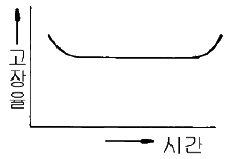
- 유도전압 곡선
- 신뢰성 곡선
- 전기전철기 부하곡선
- 고장율 곡선
(정답률: 알수없음)
64. 우리나라 비전철 구간의 5현시 구간에 사용하고 있는 ATS는 어떤 방식인가?
- 단변주방식
- 다변주방식
- 복합변주방식
- 혼합변주방식
(정답률: 알수없음)
65. 신호용 전원에 관한 설명으로 틀린 것은?
- 열차운행 중 타 분야 설비용 전원의 불안정이 신호장치에 영향을 줄 수 있으므로 독립된 전원을 사용한다.
- 신호장치는 선로상 열차 위치파악을 기본으로 하여 제어하므로 모든 전원이 차단되어도 최소한의 열차위치 파악과 진로제어가 이루어 지도록 전원을 유지하도록 한다.
- 신호전원의 차단은 열차운전을 저해하는 등의 예측치 못한 사고를 유발할 수 있다.
- 신호전원은 24시간 계속 부하로 신호장치의 보수와 공사를 위하여는 보수용 전동기 등을 접지와 상관없이 사용하여도 무방하다.
(정답률: 알수없음)
66. 5현시 자동폐색구간에서 경계신호현시 때 Y1 전구가 주부심이 단심되었을 때는 Y 전구하나만 점등되므로 착오신호가 현시될 수 있다. 이를 방지하기 위하여 어떻게 회로를 구성하는가?
- Y 현시시 반드시 Y1 전구 주부심을 확인하고 Y 전구 점등
- Y 현시시 반드시 Y1 전구가 점등된 것을 확인하고 점등
- YY 현시시 반드시 Y1 전구가 점등된 것을 확인하고 Y 전구 점등
- YY 현시시 반드시 Y 전구 주부심을 확인하고 점등
(정답률: 알수없음)
67. 우리나라 고속철도의 ATC 장치의 불연속 정보 전송장치에 관련된 내용이다. 다음 중 전송 내용이 아닌 것은?
- 전방진로의 선로조건, 분기기 개통방향 정보
- 양방향 운전을 허용하기 위한 운행방향 변경
- 터널 진·출입시 차량내 기밀장치 동작
- ATC 지역 진·출입 여부
(정답률: 알수없음)
68. 평상시 여자하는 무극선조계전기의 낙하접점을 표시하는 것은? (단, 유니트형 계전기이다.)
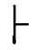
(정답률: 알수없음)
69. 계전연동장치의 조작반에 설치된 전철정자에는 몇 회선이 필요한가?
- 3
- 4
- 5
- 6
(정답률: 알수없음)
70. 진로조사계전기 회로의 설명 중 틀린 것은?
- 진로의 출발점에 상당하는 부분의 회로에 진로조사 계전기 설치
- 진로의 도착점에 상당하는 부분의 회로에 진로조사 계전기 설치
- 동일 지점에 신호기와 입환표지가 있을 때 이에 상당한 진로조사계전기 2개를 병렬로 설치
- 압구반응 계전기의 여자접점으로 전원을 공급
(정답률: 알수없음)
71. 쌍동의 경우 전철선별계전기는 몇 개인가?
- 1
- 2
- 3
- 4
(정답률: 알수없음)
72. CTC 의 효과에 해당되지 않는 것은?
- 선로용량 증대 및 운행속도 향상
- 열차운전 정리의 신속 및 정확화
- 폐색구간이 필요 없고 여객안내 자동화
- 인력절감 가능
(정답률: 알수없음)
73. 비전철구간의 직류 신호제어회선은 보통 [+]쪽만 사용하고 [-]쪽은 공통으로 사용한다. 그 이유로 옳은 것은?
- 보안도를 높이기 위함이다.
- 저항을 감소시켜 케이블의 굵기를 작게 하기 위함이다.
- 전원전압을 줄이기 위함이다.
- 정전용량을 증가시키기 위함이다.
(정답률: 알수없음)
74. 100㎞/h의 여객열차의 안전을 위하여 ATS 를 설치하려고 한다. 설치위치로 맞는 것은?
- 신호기 외방 866m 지점
- 신호기 내방 866 m 지점
- 신호기 외방 566 m 지점
- 신호기 내방 566 m 지점
(정답률: 알수없음)
75. 건널목 경보기의 경보시간 T 와 제어거리 L 및 열차속도 V 와는 어떠한 관계식이 성립되는가?
- T = V · L
(정답률: 알수없음)
76. 궤도의 곡선부를 열차가 달리고 있을 때 원심력에 의해서 열차를 곡선의 외측으로 비상시켜 벗어나게 하는 힘이 작용한다. 이것을 수직방향 힘으로 풀어주기 위해 곡선의 내측 레일보다 외측 레일을 조금 높게 한다. 이 고저차를 무엇이라고 하는가?
- 슬랙
- 캔트
- 궤간차
- 곡선반경
(정답률: 알수없음)
77. 제2종 연동기 중 갑호연동기를 도식기호로 표시하고자 한다. 옳은 것은?
(정답률: 알수없음)
78. 궤도회로 연장 100m 구간에 레일간 전압 5V, 누설전류 0.1A 인 궤도회로의 누설 컨덕턴스는 몇 S/km 인가?
- 0.1
- 0.2
- 0.3
- 0.4
(정답률: 알수없음)
79. 열차의 차축에 의하여 궤도회로가 단락 되었을 때 전원장치에 과다한 전류가 흐르는 것을 제한하기 위한 장치는?
- 궤조절연
- 한류장치
- 임피던스 본드
- 레일 본드
(정답률: 알수없음)
80. 전기선로전환기에서 레일 간격간은 텅레일의 선단에서 약 몇 mm 지점에 설치하는가?
- 100
- 200
- 300
- 400
(정답률: 알수없음)